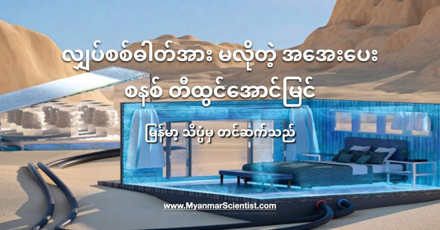

ကမ္ဘာပေါ်မှာ ရှိတဲ့ အပူပိုင်း ဒေသတွေက အိမ်ယာနဲ့ အဆောက်အအုံတွေမှာ ပူပြင်းတဲ့ ရာသီဥတုဒါဏ် ခံနိုင်ဖို့ အအေးပေး စနစ်တွေ လိုအပ်ပါတယ်။ ဒါပေမယ့် ဒီ အအေးပေး စနစ်တွေကို အသုံးပြုဖို့ လျှပ်စစ်ဓါတ်အားကိုတော့ ဒီဒေသက လူတိုင်း မတတ်နိုင် ကြပါဘူး။
ဒီလို လျှပ်စစ်ဓါတ်အား မရလို့ (သို့) မတတ်နိုင်လို့ ပူပြင်းတဲ့ ဒါဏ်ကို လူးလှိမ့် ခံနေရတဲ့ သူတွေအတွက် လျှပ်စစ်စွမ်းအင် မလိုတဲ့ အအေးပေး စနစ်တမျိုးကို ဆော်ဒီ နိုင်ငံက သုတေသီတွေက တီထွင်လိုက်ပါတယ်။ ဒီစနစ်ကို ဆော်ဒီနိုင်ငံ King Abdullah သိပ္ပံနှင့် နည်းပညာ တက္ကသိုလ်က အင်ဂျင်နီယာတွေက တီထွင်လိုက်တာ ဖြစ်ပါတယ်။
ဒီ အအေးပေး စနစ်မှာ လျှပ်စစ်ဓါတ်အားကို သုံးစွဲခြင်း မရှိပဲ နေရဲ့ စွမ်းအားနဲ့ ဆားရဲ့ အေးစေနိုင်တဲ့ ဂုဏ်သတ္တိတို့ကို အသုံးချပြီး အအေးပေးတဲ့ စနစ် ဖြစ်ပါတယ်။ ဒီစနစ်ကို အသုံးပြုပြီး အပူပိုင်း ဒေသတွေမှာ ရှိတဲ့ အိမ်နဲ့ အဆောက်အအုံတွေမှာ လျှပ်စစ်ဓါတ်အား မလိုပဲ အအေးပေးနိုင်မှာ ဖြစ်ပါတယ်။
ဒီစနစ်မှာ အအေးပေး စနစ် နှစ်ပိုင်းပါဝင်ပါတယ်။ ပြီးတော့ လျှပ်စစ်သုံးစွဲရတဲ့ အစိတ်အပိုင်းလဲ လုံးဝ ပါဝင်ခြင်း မရှိပါဘူး။ ဒီစနစ်ရဲ့ အခြေခံကတော့ ဆားကို ရေထဲ ထည့်ဖျော်လိုက်ရင် ဆားက အပူဓါတ်တွေ စုပ်ယူပြီး ပတ်ဝန်းကျင်ကို အေးသွားစေတဲ့ ဓါတုဗေဒ ဂုဏ်သတ္တိကို အသုံးပြု ထားတာ ဖြစ်ပါတယ်။ ပူနွေးတဲ့ ရေထဲကို ဆားထည့်လိုက်ရင် ဆားအရည်ပျော်တဲ့အချိန်မှာ ဒီရေဟာ အေးသွားပါတယ်။ ပြီးတော့ ဒီဆားရည်ကို နေရောင်ခြည်နဲ့ အငွေ့ပျံ ခန်းခြောက်စေပါတယ်။ ဒီလို အငွေ့ပျံတဲ့ အခါလဲ ပတ်ဝန်းကျင်က အပူဓါတ်ကို စုပ်ယူပြီး အေးသွားစေပြန်ပါတယ်။ အငွေ့ပျံသွားပြီး ကျန်ခဲ့တဲ့ ဆားကို နောက်တခါ အအေးပေးဖို့ ပြန်သုံးမှာ ဖြစ်လို့ ဆားအသစ် ထပ်ဝယ်စရာလဲ မလိုတော့ပါဘူး။
သုတေသန ပြုချက်တွေအရ အမိုနီယံ နိုက်ထရိတ် (NH4NO4) ဟာ အအေးပေးနိုင်မှု အကောင်းဆုံးဆိုတာ တွေ့ရှိခဲ့ရပါတယ်။ သူ့နောက်က ဒုတိယ လိုက်တာကတော့ အမိုနီယံ ကလိုရိုက် (NH4Cl) ဖြစ်ပါတယ်။ ဒါပေမယ့် အမိုနီယံ နိုက်ထရိတ်ဟာ အမိုနီယံ ကလိုရိုက်ထက် အအေးပေးနိုင်စွမ်း ၄ ဆတောင် သာပါတယ်တဲ့။ ဒီလို ဖြစ်ရတာကတော့ အမိုနီယံ နိုက်ထရိတ်ဟာ ရေထဲ ပျော်ဝင်မှုအား အရမ်းကောင်းလို့ ဖြစ်ပါတယ်။ နောက်ပြီး အမိုနီယံ နိုက်ထရိတ်က ဈေးလဲ သက်သာပြီး လက်ရှိမှာ ဓါတ်မြေဩဇာ အဖြစ် တွင်တွင်ကျယ်ကျယ် အသုံးပြုနေတာမို့ အလွယ်တကူလဲ ဝယ်လို့ ရနိုင်တာပဲ ဖြစ်ပါတယ်။
ဒီ အအေးပေး စနစ်ကို အသုံးပြုပြီး ဈေးသက်သက်သာသာနဲ့ အစားအသောက်တွေ တာရှည်ခံအောင် ထားဖို့နဲ့ အိမ်တွင်း အအေးပေးဖို့ အသုံးပြုနိင်လိမ့်မယ်လို့ ဆိုပါတယ်။ အထူးသဖြင့် လျှပ်စစ်ဓါတ်အား ပေါပေါများများ မရတဲ့ နိုင်ငံတွေအတွက် အထူးပဲ အကျိုးရှိစေမှာ ဖြစ်ပါတယ်။
တက္ကသိုလ်က အင်ဂျင်နီယာတွေက ဒီ အအေးပေး စနစ်ကို အစားအသောက်တွေ တာရှည်ခံအောင် ထားဖို့ အသုံးပြုနိုင်တယ် ဆိုတာကို လက်တွေ့ သရုပ်ပြခဲ့ ကြပါတယ်။ ဒီသရုပ်ပြမှုမှာ ဖေါ့ဘူးထဲ သံခွက်တခွက် ထည့်ပြီး အဲ့ခွက်ထဲမှာ ရှိတဲ့ ရေထဲကိုဆားတွေ ထည့်လိုက်ပါတယ်။ ဒီအခါ မူလက အခန်းအပူချိန်ရှိတဲ့ အခြေအနေကနေ ၃.၆ ဒီဂရီ စင်တီဂရိတ်ကို မိနစ် ၂၀ အတွင်း ကျဆင်းသွားပါတယ်။ နောက်ပြီး ဒီဖေါ့ဘူးထဲမှာ ၁၅ ဒီဂရီ စင်တီဂရိတ်အောက် အပူချိန်နဲ့ နောက်ထပ် ၁၅ နာရီကြာအောင် ထိန်းထားနိုင်တာ တွေ့ရှိကြရပါတယ်။
ပြီးတော့ ဒီဆားရေ မူလ အပူချိန် ပြန်ရောက်သွားတဲ့အခါ နေစွမ်းအင် အသုံးချပြီး အလွယ်တကူ ဆားပြန်ချက်နိုင်မယ့် ကိရိယာ ကိုလဲ ပြသခဲ့ပါတယ်။ ဒီကိရိယာကလဲ အထူးအဆန်းတော့မဟုတ်ပါဘူး။ ဒယ်အိုးပြားလို ခပ်ပြားပြား ဒယ်တခုပါ။ ဒါပေမယ့် သူ့ကို နေက အပူကို အလွယ်တကူ စုပ်ယူနိုင်မယ့် သတ္တုစပ်နဲ့ ပြုလုပ်ထားပြီး မြောင်းတွေ ဖေါ်ထားတာမို့ ရေခန်းတာ မြန်ပါတယ်။ ကျန်ခဲ့တဲ့ ဆားကို နောက်ထပ် ရေထဲ ထပ်ထည့်ပြီး အအေးပေးဖို့ ပြန်သုံးနိုင်ပါတယ်။
ဒီနည်းစနစ်ကို အသုံးပြုပြီး အိမ်တွေကို အအေးပေးနိုင်မယ့် စနစ်ကိုလဲ ဆက်လက်တီထွင်နေပါတယ်။
ဒီလို လျှပ်စစ်ဓါတ်အား မလိုပဲ အအေးပေးနိုင်မယ့် စနစ်ကို ကြံစနေတာ ကမ္ဘာအနှံ့က နည်းပညာရှင်တွေ အများအပြား ကြိုးစားနေကြတာ ဖြစ်ပါတယ်။ ဥပမာ စင်ကာပူက အင်ဂျင်နီယာတွေဟာ လျှပ်စစ်ဓါတ်အား အနည်းငယ်နဲ့ အအေးပေးနိုင်မယ့် “ Cold Tube” ဆိုတဲ့ နည်းစနစ်ကို တီထွင်ခဲ့ကြပါတယ်။ ဒီနည်းက နံရံမှာ မြှုပ်ထားတဲ့ အအေးပိုက် တွေကတဆင့် အခန်းတွင်း (သို့) အဆောက်အအုံ ပြင်ပ အပူချိန်ကို လျှော့ချပေးမယ့် နည်းလမ်း ဖြစ်ပြီး လေအေးပေးစက် သုံးတာထက် လျှပ်စစ်ဓါတ်အား သုံးစွဲမှု အများကြီး သက်သာမယ်လို့ ဆိုပါတယ်။
ပါဒူး တက္ကသိုလ်က ပညာရှင်တွေကလဲ အရမ်းဖြူတဲ့ အိမ်သုတ်ဆေး တမျိုးကို တီထွင်ခဲ့ကြပါတယ်။ ဒီအိမ်သုတ်ဆေးက ဖြူလွန်းလို့ နေရောင်ကို ရောင်ပြန်ပေးနိုင်တာမို့ အိမ်တွင်း အပူချိန်ကိုတောင် လျှော့ချပေးနိုင်မယ်လို့ ဆိုထားပါတယ်။
References:
Electricity-free cooling system uses sunlight and saltwater for refrigeration | Inceptive Mind
Cold Tube: a paradigm shift to cooling | ETH
လျှပ်စစ်ဓါတ်အား မလိုတဲ့ အအေးပေးစနစ်

September 22, 2021
Other Posts
- ဘာ့ကြောင့် T. rex တွေရဲ့ လက်တွေဟာ တိုနေရတာလဲ
- မစ်ချလင်တာယာကုမ္ပဏီက လေမဲ့တာယာ ထုတ်ဖော်ပြသ
- သံရည်ပူတွေ မိုးရွာကျနေတဲ့ ဂြိုလ်
- ကမ္ဘာလုံးကြောင်း ဘယ်လို သိနိုင်မလဲ
- ကိုယ်ပျောက်လေယာဉ်တွေအတွက် ကြီးမားတဲ့ ခြိမ်းခြောက်မှု ဖြစ်လာနိုင်တဲ့ S-500 လေကြောင်းရန် ကာကွယ်ရေးစနစ်သစ်
- Black hole နား ကြယ်တစင်း ကပ်သွားရင် ဘာဖြစ်မလဲ
- ဆေးတစ်လုံးထိုးရုံနှင့် ကင်ဆာပျောက်အောင် ကုနိုင်တော့မည်
- နဂါးလူသား Dragon Man
- Black Hole ရဲ့အမွှာ White Hole
- စကြာဝဠာ ခေတ်ဦး ဂလက်ဆီ တစ်ခုမှာ ရေတွေ့